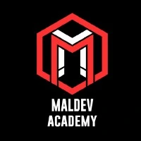

Completed
Practical Malware Analysis
Michael Sikorski · Andrew Honig
outside an init.d of milk.
REVERSE ENGINEERING / VULNERABILITY RESEARCH
SYSTEM · SOFTWARE
BOOKS / SELF-STUDY / PROFESSIONAL CERTIFICATIONS
Michael Sikorski · Andrew Honig
Kyle Cucci
TCM Security // PMRP
Malware analysis / reverse engineering

Malware Development Course
Windows internals / malware development
No records found.
CVE / EXPLOITS / VULNERABILITIES / DISCOVERY / REVERSE-ENGINEERING / MALWARE-RESEARCH / DETECTION
Challenge write-ups and learning notes for pwnable.kr security challenges.
Practice repository for shellcode research and low-level security learning.
Introduction to command-and-control (C2) frameworks and their basic architecture.
Research notes on Linux ptrace, process tracing, and process-injection concepts.
CVE disclosure: missing authentication for a critical function.
CVE disclosure: sensitive information transmitted in cleartext.
YARA rules for identifying static artifacts associated with WannaCry.
Reverse-engineering report on WannaCry’s kill-switch mechanism.
OPERATING-SYSTEMS / SCRIPTS / CONFIGURATIONS / SOFTWARE / HARDWARE
BSD dotfiles and configuration files inspired by Serial Experiments Lain.
Custom Ghidra theme using colors from this site’s visual design.
Minescript scripts for automating tasks in Minecraft.
Debian-based dotfiles and configuration files inspired by Serial Experiments Lain.
Command-line tool that reads MyAnimeList’s top anime rankings and randomly selects a title.
HTTP server written in C.